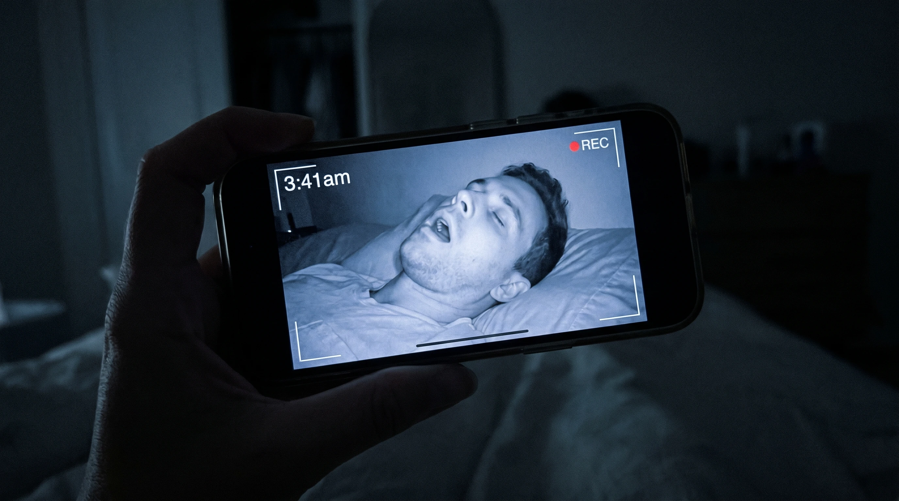
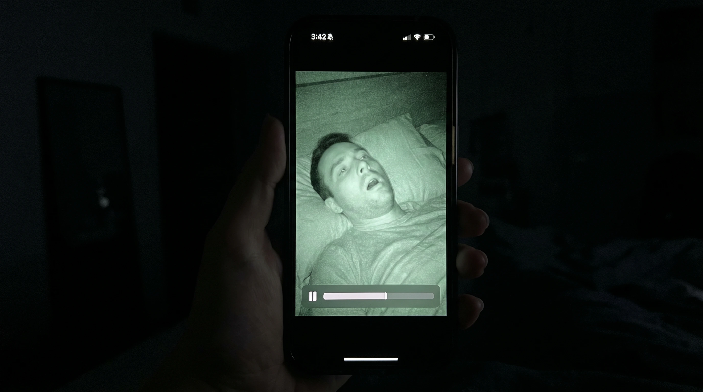
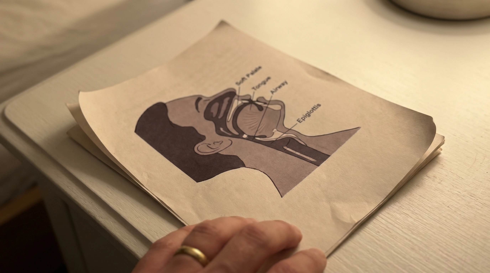
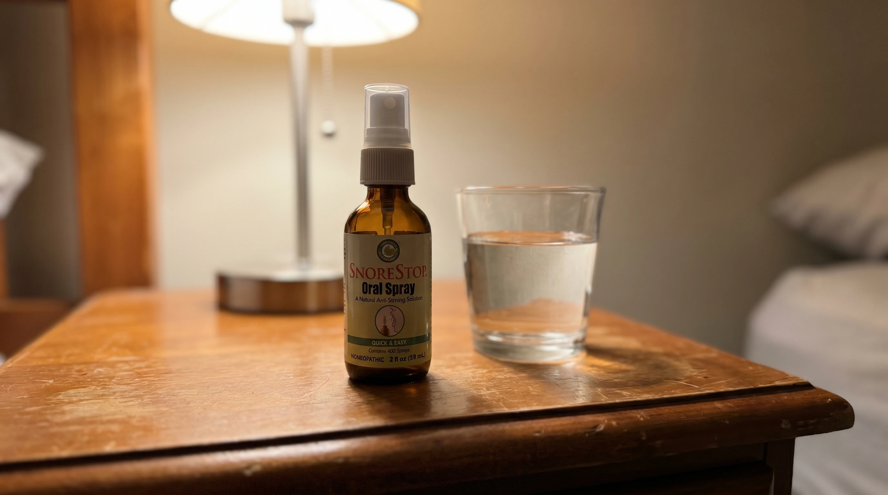
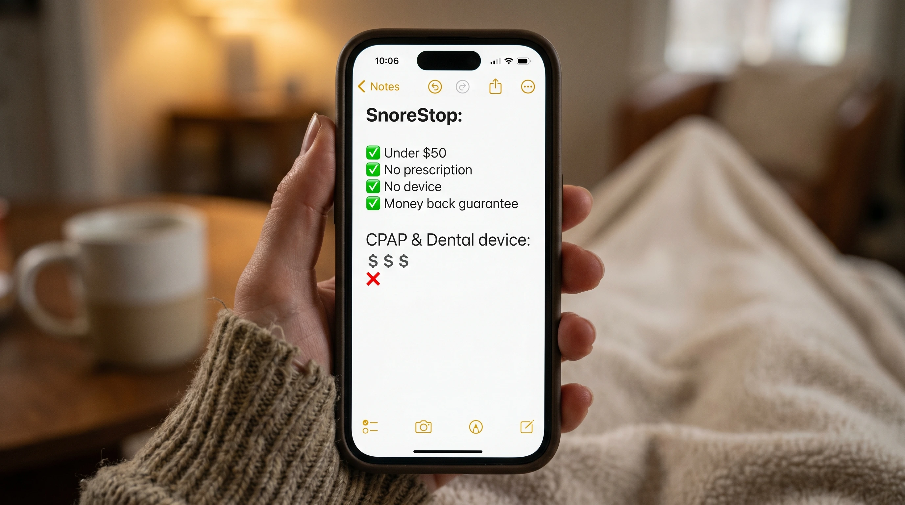
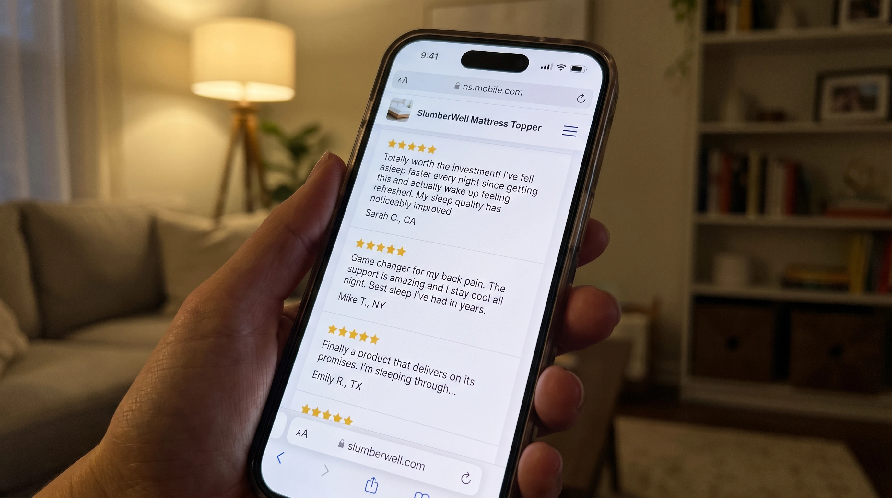

I felt completely fine every morning.
That was the story I had built and lived inside for years. Eight hours of sleep, wake up, feel fine, move on. My wife mentioned my snoring occasionally and I acknowledged it the way you acknowledge something that isn't your problem because you sleep through every second of it. I'd bought strips at some point. They helped a little. We moved on.
I had never once seen myself sleep. Never heard myself. Never had any reason to question the story because every morning the story checked out. I felt fine.
Then one Sunday morning she handed me her phone without saying anything and pressed play.
What I watched for the next forty seconds is not something I can fully describe in a way that will land the way it landed for me in that moment. What I can tell you is that the person on that screen and the person I believed I was when I closed my eyes every night were not the same person. Not even close.
What I found after that morning is in what I wrote below. The fix turned out to be so simple after everything I went through that I'm still angry about how long it took me to get there. Read it before you spend another year feeling fine.
It started as something I dismissed
My snoring had apparently been going on for years.
I say apparently because I was asleep for every second of it and had no firsthand experience of it whatsoever. My wife mentioned it. I believed her in the abstract the way you believe someone when they tell you something about yourself that you cannot verify. I bought strips. I tried sleeping on my side. I said I'd look into it and then didn't because every morning I woke up feeling fine and fine people do not look into things urgently.
She stopped mentioning it after a while.
I took that as a good sign. I understand now that she stopped mentioning it because she had accepted that mentioning it wasn't going to produce any meaningful action and she was tired of having the same conversation that went nowhere. She was still lying next to it every night. She had just stopped reporting on it because the reports weren't changing anything.
Meanwhile I kept waking up every morning feeling fine and telling myself the story that feeling fine meant everything was fine and that if something were seriously wrong someone would have said something by now.
She had said something. Many times. I just hadn't heard it as seriously wrong.

The video
She had been recording it for three weeks before she showed me.
She told me this after. She'd started recording because she wanted to show me something she couldn't describe accurately enough in words and she knew I wouldn't believe the description anyway. So she recorded it. Several nights. Built up a folder of evidence she hadn't shown me yet because she wasn't sure how I was going to react.
The Sunday morning she finally showed me she just handed me the phone and pressed play and sat there watching my face while I watched the screen.
I want to be honest about what I saw because I think it matters.
The night vision made everything look clinical and slightly alien, grey and grainy and lit from no obvious source, the way security footage looks. The man on the screen was on his back, mouth completely open, jaw dropped further than seems normal, neck strained slightly backward. The sound coming out of him, even through a phone speaker, was not something I would have described as snoring if I hadn't been told that's what it was.
I watched it once and then I watched it again.
She didn't say anything. She didn't need to. The video had already said everything she'd been trying to say for years and hadn't been able to say in a way that made me actually hear it.
I handed her the phone back and sat there for a long time not speaking.
"She had been recording it for three weeks before she showed me. Building up a folder of evidence because she knew I wouldn't believe the description in words."
The part I've never said out loud
The first thing I felt was disbelief.
Not denial — I was looking at the video on her phone and I couldn't deny what was on it. Just the specific disbelief of seeing something about yourself that completely contradicts the version of yourself you have been carrying around for years. The person on that screen and the person who had been waking up every morning feeling fine were supposed to be the same person and they weren't and I didn't know what to do with that gap.
The second thing I felt was something closer to shame.
Because she had been lying next to that every single night. For years. Lying next to that sound and that open mouth and whatever it looked like from her side of the bed and waking up every morning next to me while I said I feel fine, slept great, how about you, and she said fine too and neither of us was being fully honest.
She had been watching me sleep like that for years and she had stayed. That landed harder than the video had.
The third thing I felt was the specific anger of a person who has just understood that they had information available to them for a long time and chose comfort over looking at it. She had told me. I had chosen not to hear it. That was not her failure.
What I started reading that morning
I went looking with a different energy than I had ever brought to this before.
Before that morning I had been a person who thought his snoring was a minor inconvenience that didn't require urgent attention. After that morning I was a person who had seen what his snoring actually looked like and understood for the first time that fine every morning was not the same as nothing is wrong.
I read about what the snoring actually is. Not the polite version I'd been telling myself for years but the actual mechanism. Soft tissue at the back of the throat relaxing during sleep and partially blocking the airway and vibrating as air tries to move through. When it gets bad enough the airway doesn't just partially block. It closes. The breathing stops. The body jolts back. The person sleeping feels nothing because they are unconscious and their body is running the emergency response without their knowledge or participation.
I had felt completely fine every morning because I was asleep for all of it.
Fine in the morning means nothing about what happens in the night. I understood that now in a way I had not understood it before the video and could not un-understand it after.
I kept reading. I read about what this does over years. What builds quietly in a body that goes through this every night while the person sleeping feels fine and dismisses their wife's concern and buys strips that don't really work and goes back to sleep.
I was not comfortable by the end of that morning. But I was finally paying attention.
What I found
I expected the answer to be complicated.
Sleep study. Machine. Device. Something that matched the seriousness of what I had spent the morning reading about. I had moved past the point of wanting something easy and had mentally prepared myself for whatever the real answer was going to cost.
What I actually found reframed everything.
The snoring is a throat problem. Not a nose problem, not a position problem, not exclusively a weight problem. The sound comes from soft tissue at the back of the throat relaxing during sleep and vibrating as air moves through the restricted airway. The fix that works on that specific problem works on the throat tissue directly.
There is a natural throat spray that coats the soft palate and throat, temporarily firming the tissue, reducing the vibration that creates the sound, helping keep the airway open enough that the stopping doesn't happen. It has been in pharmacies since 1995, thirty years, used by over 250,000 people. No prescription, no machine, no mask, no hose, no device, nothing to charge or clean or strap to your face.
Two seconds before bed.
I sat there reading it and rereading it and thinking about the video on her phone and feeling furious at the gap between those two things. Not at her. Not at anyone specific. Just at the gap. At the years I had spent feeling fine while something that had a two second fix had been quietly doing whatever it had been doing in the dark.
I ordered it before I finished reading the page.
Why it actually works when everything else doesn't
Most snoring products fail because they work around the problem rather than at it.
Nasal strips open the nasal passage. Chin straps reposition the jaw. Positional pillows keep you off your back. White noise machines make the sound more bearable for the person lying next to it. All of these address the symptoms or the experience of the snoring without touching the actual source of it.
The source is the soft tissue at the back of the throat.
When that tissue relaxes enough during sleep to partially block the airway it vibrates as air moves through. That vibration is the snoring. When the blockage gets severe enough the airway closes completely. That is the stopping. The body jolts back. The cycle repeats dozens of times a night while the person sleeping feels nothing and wakes up every morning feeling fine.
SnoreStop throat spray works directly on that tissue. The natural formula coats the soft palate and throat, temporarily firming the tissue, reducing the vibration, keeping the airway open enough that the sound doesn't have the conditions it needs to happen.
Thirty years in pharmacies. Over 250,000 people. Not new. Not experimental. A product that has existed since 1995 and continued to exist because it works on the actual source of the problem consistently enough that people keep using it and keep telling other people about it.
Two seconds before bed. That is the entire compliance requirement.


| Option | Cost | What it involves |
|---|---|---|
| Sleep study + CPAP | $1,000–$3,500 | Machine, mask, hose, nightly setup |
| Dental MAD device | $1,500–$4,500 | Custom fitting, multiple appointments |
| Surgical options | $4,000–$6,000+ | Recovery time, risk, no guarantee |
| SnoreStop throat spray | Under $50 | Two seconds before bed |

"My husband had no idea how bad his snoring was until I showed him the recording I'd been keeping on my phone. He ordered this the same day. Six months later I sleep through the night every night. He does too."
"I was the guy who felt fine every morning and dismissed my wife's concern for years. She showed me a video. I ordered this that afternoon. Three weeks in she told me she'd stopped dreading bedtime. That's the whole review."
"Four years of telling him. Four years of fine. One video and suddenly he was ready to do something about it. Seven months later there's nothing left to think about because there's nothing left to fix."

Eight months later
She deleted the folder.
I found out by accident. I asked her a few weeks ago if she still had the videos and she thought about it for a second and said she'd deleted them sometime around month two because she didn't need them anymore and hadn't thought about them since.
I thought about that for a while after she said it.
She had kept that folder for three weeks before she showed me. Evidence of something she'd been trying to tell me for years that she hadn't been able to make me hear in words. She'd built it carefully and shown it to me at exactly the right moment and then two months after I'd finally done something about it she'd deleted it without ceremony because the problem it documented no longer existed and the folder had no purpose anymore.
Eight months later she sleeps like she used to sleep before my snoring got bad enough to matter. Deeply. Fully. Through the night. She doesn't mention the snoring anymore because there isn't anything to mention. She doesn't record anything at night because there isn't anything worth recording.
I still think about the video sometimes. The grey grainy night vision. The open mouth. The sound through the phone speaker. The specific experience of watching yourself and not recognizing what you're watching.
I'm glad she recorded it. I'm glad she showed it to me. I'm angry it took a video to make me hear what she'd been saying for years. I can't do anything about the years before the video. I can do something about the years after it, which is what I've been doing, and what I'm still doing, one two second spray before bed at a time.
The part that made me pull the trigger
When I found SnoreStop I almost kept looking because the simplicity seemed wrong after the morning I had just been through.
What made me actually order it was the guarantee.
Thirty days. Full refund. No questions asked, no justification required, no explanation needed. You try it for thirty days and if the snoring doesn't improve you get every dollar back.
After the video and the morning of reading I was not in a position to argue with a guarantee like that. The math was simple. Either the snoring stops and the video becomes something she can delete because it no longer documents anything real. Or it doesn't work and it costs nothing.
There is no version of that math that goes wrong. I ordered it before I could find a reason not to.
🟢 The SnoreStop 30-Day Guarantee
Try it for a full 30 days. If the snoring doesn't improve contact them for a complete refund. No questions. No justification required. No process to navigate.
Why I'm writing this
I'm writing this because of the video.
Because of what it felt like to watch forty seconds of footage of myself and understand for the first time what fine every morning had actually been covering up. Because of the years my wife had spent lying next to something she couldn't make me take seriously in words. Because of the folder she built for three weeks before she finally showed it to me and the fact that she felt she needed to build a folder at all.
If you snore and you feel fine every morning, the feeling fine is not evidence that nothing is wrong. It is evidence that you are asleep while something is wrong and your body is handling it without your knowledge and the person lying next to you is not asleep and is not fine and has probably stopped saying so because saying so stopped producing results.
The fix exists. It is simple, it has been around for thirty years, it costs less than the problem is costing the person lying next to you every single night, and there is a guarantee that means trying it costs you nothing if it doesn't work.
Read what's below. Then do something about it tonight before she picks up her phone again.